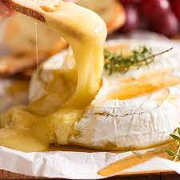

Baked Brie

Description
I feel like cheese is a good thing to love. Its incredibly versatile, is present in almost every culture, and eating it releases the same chemical equation to our brains as heroine does. One of my favorite cheeses is a baked brie. This warm, melty, salty wheel never dissapoints me and is always ready in my own fridge. I encourage anyone to explore its diverse flavor profile pairings: from sweet jams to spicy pepper relish, you can top this cheese with just about anything you already have in your kitchen.
Ingredients
- Brie, any size, any style, any price range
- Oil, I'd recomend EVOO but customize it to your end goal
- Minced Garlic, or maybe a sweet jam
- Salt, pepper, and any other seasonings. This is a recipe that you make from the heart.
Steps
- Put the brie on an oven safe dish, preferably one that will have additional room for crackers.
- Top brie with chosen ingredients. Ex., drizzle olive oil over the top and sprinkle minced garlic and lightly season with salt and pepper and some italian seasoning. If using a jam, use a spoon to spread a thinish layer all across the top. Some people prefer to take the "rind" off the top of the cheese so that they can have better access to the creamy center. This is completly optional as the rind is safe to eat and more of a matter of preference.
- Place in preheated oven at 350 degrees F for 15-20 minutes or until it seems ready. Let it call to you.
- Enjoy with crackers, a bagette toasted with olive oil and sea salt cut at a bias, on the side with a ham dinner, or anything else you can think of.